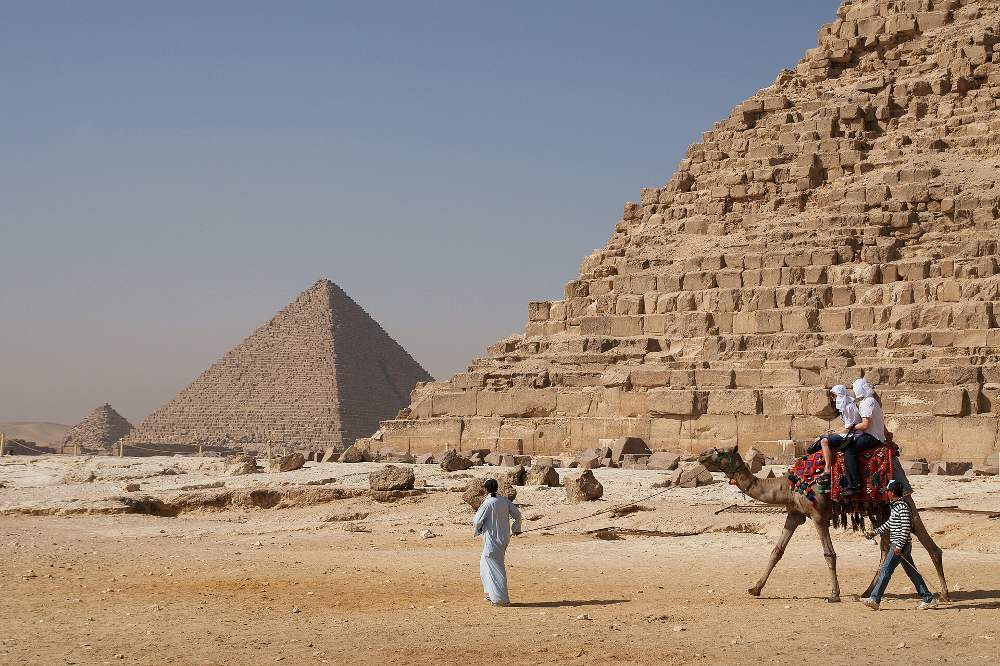
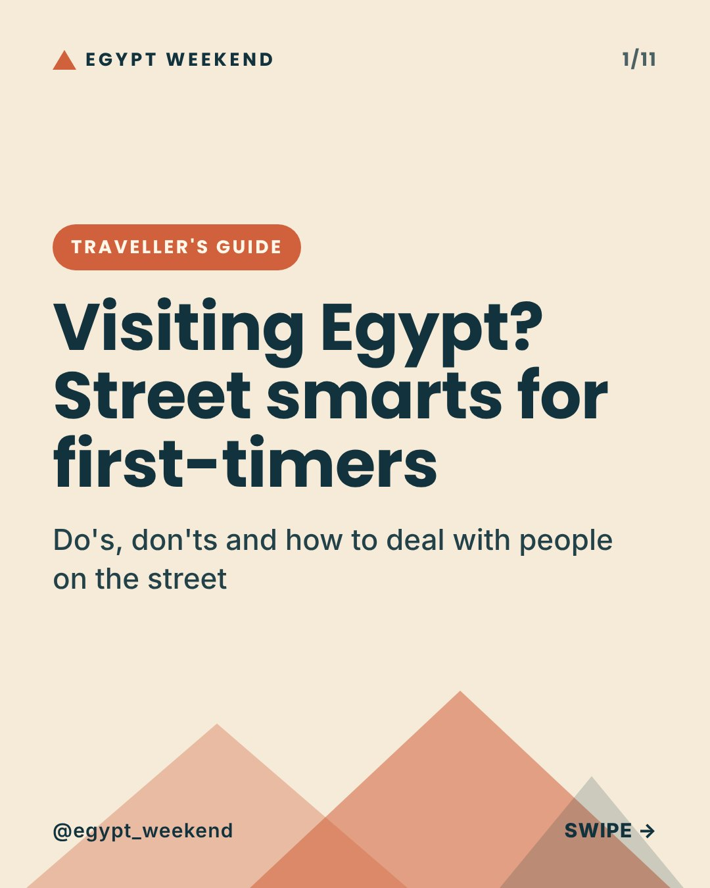

See Egypt the way locals do.
Private and small-group experiences in Cairo, from walking tours to Nile kayaking and horseback rides to the pyramids. Clear plans, honest timing, and a guide who lives here.
My experiences on Simsem
Local experiences I host in Cairo. Open any one to see the full details and book on Simsem.
More experiences I can arrange
Popular things to do in and around Cairo. Add the ones you like to your request and I send a price for your group.
Trips and tour programmes
Ready-made routes that combine the day tours into one trip. Every programme is a starting point: I adjust the days, stops and pace around your group, then send a clear price.
Want something different?
Tell me your dates, interests and budget range. I build the route around you.
What you get
A fixed plan, shared early
You receive the route, meeting point and timing before the day, so nothing is a surprise.
Beat the crowds
Early starts and smart ordering of stops at the busiest sites.
Local food and etiquette
Where to eat, what to pay, and how to move around without being overcharged.
One point of contact
I am the person you message before, during and after your trip.

Street smarts for visitors to Egypt
Nine habits that make your trip smoother: prices, tips, dress, photos and getting around.
Read the travel tipsQuestions I get often
Request your trip
Fill in the details and send the message on WhatsApp. I reply with availability and a price for your group.